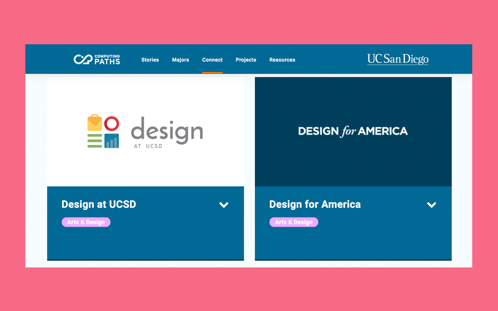
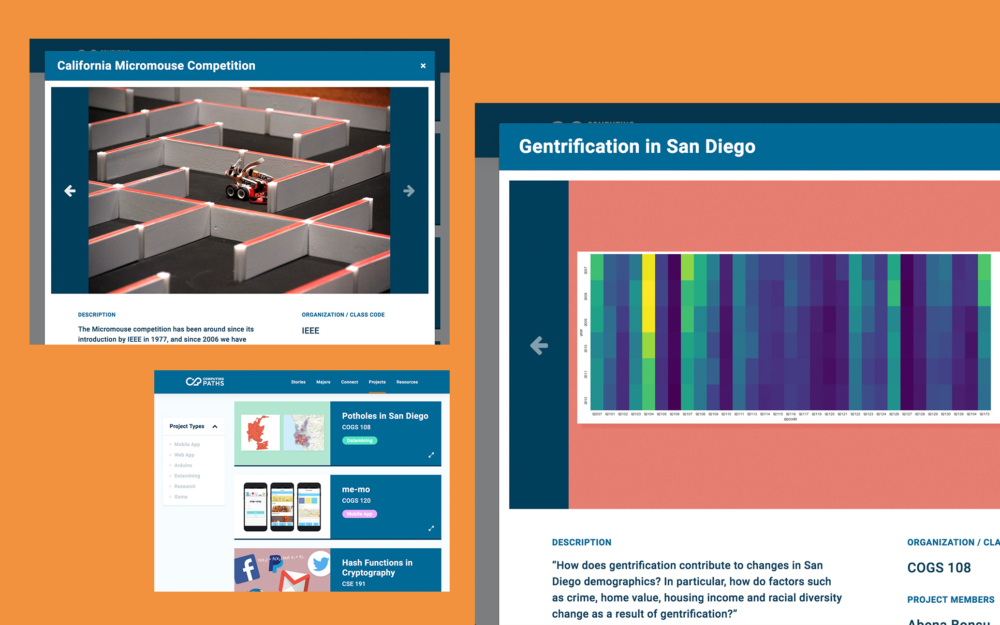
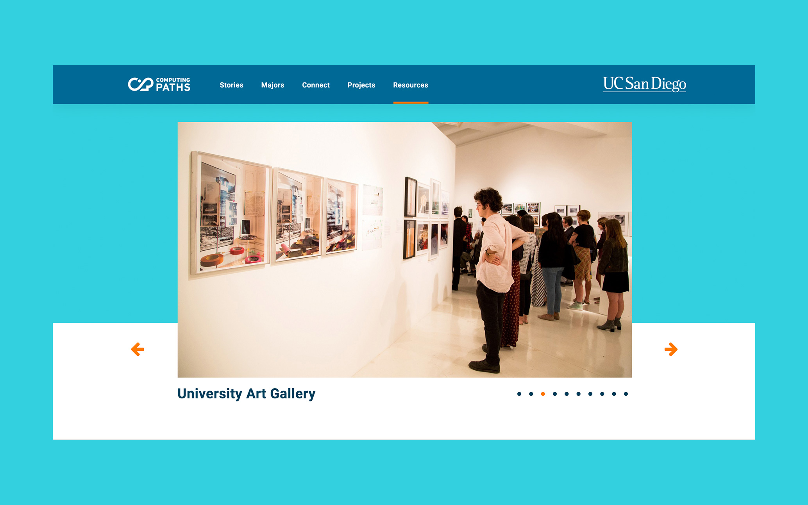

I had the opportunity to lead a web content development team.
Computing Paths at UCSD is an online hub for information on all of the computing-related majors at the university. It was originally designed years ago, and never took off–mostly due to its lack of content, inefficient design, and out-of-date
information.
I joined as the Content Team Lead, tasked with breathing new life into the site and reimagining how it would function. I worked directly with student orgs, university departments, designers, and engineers to help craft web content
that was accurate, important, and technically feasible.
Details
Contract work, Jacobs School of Engineering
July 2017—August 2017
Role
Content Direction Copywriting Photography Research Team Lead
{kind=link}
{kind=link}
{kind=link}
Analysis & Outreach
I started by sifting through the site and identifying what was working towards our goals and what wasn't. The old site was filled with information that didn't inform students–an unkempt event calendar, pages of lengthy interview videos, and cheesy quotes about computing–so I took all of those out. But I also wanted a broader perspective on what others students look for in a official school site, so I initiated a series of surveys that were distributed via social media.
Two Kinds of Survey
The first survey was intended to be a broad inquiry into student concerns and interests regarding their majors and the way they get information about them. We asked about students' main sources of info, how they find out about departmental activities and student groups, and what influenced their choice of major. We received 128 responses, and from those answers crafted a second, more focused survey that we distributed to the rest of our team. We asked pointed questions about existing and hypothetical features, and asked for detailed suggestions about what the new site might look like.
Interpretation
We quickly discovered that a majority of those who responded rely on a combination of internet forums and other unofficial outlets for the most accurate portrayal of the programs. We also found that although there was a great deal of official information, it was dense, difficult to sift through, and lacked a personal touch.
We pinpointed some common frustrations: it was hard to tell what students were actually doing in the programs, what their experiences were, and how they were applying it to real work. Students instead turned to online forums like Reddit for anecdotes and advice. We came up with five categories of content to address these concerns.
52% of respondents said they had used Reddit as a source of information about their major.
01. Stories
Telling a Story
Students want to learn more about what it's really like to be in the program, how other people ended up in it, and how the program is preparing them for life after college.
Our first content type tells the stories of students in computing programs. The main feature is a ~4 minute video with an in-depth look at the journey of Rachel Keirouz, a UCSD Computer Science undergrad. Other stories are pulled from archival videos that appeared on the original website, as well as short interviews of students and faculty.
Screenshot from the live website.
02. Majors

The Main Attraction
Computing Paths is all about the computing-related majors at UCSD. We learned from our surveys that existing information on majors was verbose and generally unhelpful when trying to form a realistic view of the program, so we rewrote them entirely.
We adopted clear language and tried to give a taste of what students actually do in the program, while still going through administration officials for approval on our reworks. We included relevant information like whether the major was capped or not, the associated departments and their websites, and also broke down the major's specializations, if applicable.
Screenshot from the live website.
03. Student Orgs
Finding Connections
While researching for computing-related student orgs on campus, we found that information was sparse and spread out over multiple websites. The official school listing was outdated, and there wasn't any other centralized listing we could use. Furthermore, we knew from the surveys that many students discovered student orgs from word-of-mouth or by seeing their events posted on social media—but not every org had coordinated outreach.
We compiled a list of every relevant student org into one section, wrote up short descriptions for each, and hyperlinked to their sites to give them more exposure and help prospective students get a better idea of groups they could join.
One of the student org's websites.
04. Student Work
Showcasing Students
Students were frustrated by a lack of accessibility to work that their current or potential peers were making in classes and on the side. We decided to collect a range of student projects—from engineering to design to data science—into a showcase.
The intention is to give prospective students a better idea of what other people are actually doing in their programs, and also provide information on the relevant student orgs and classes that the projects were developed in.
Screenshot from the live website.
05. Resources
Getting Resourceful
While compiling resources to include on the site, we were met with a similar disarray of online information. Our resources section consolidates all of the relevant resources, and can be filtered by six categories: academic support, buildings, events, showcases, equipment, and workspaces.
Like all other sections of the site, the resources page is inteded to be a living document, able to be updated with new resources as they come available. The filtering mechanism ensures that students will be able to quickly find what they're looking for.
Screenshot from the live website.
Photographs I took to populate the new website.
Content Team
Oliver EngelLead
Kimberly Au
Paul Llanura
Design Team
Andy HwangLead
Justin Cai
Caris Wei
Development Team
David DuplantierLead
Shawn Gao
Catherine Kim
Vylana Trang